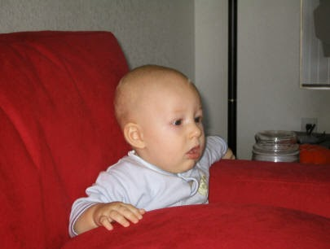

Recovered weblog entry
Cutest thing
The Jazz got whooped tonight. I don't recall the score exactly, but it was like 670-36. We went to the game tonight with a couple of our friends, so gratefully that made it worth it.
Not a whole lot else on my mind, I'm afraid. Yeah. Nothing. I keep typing lines and deleting them. Must be a sign.
I will, however, leave you with this:

I don't care what he's doing. He's the cutest thing on the planet.